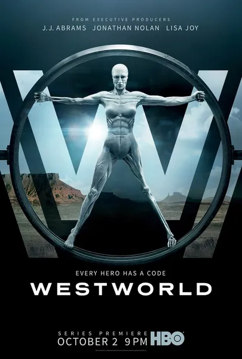

Сериал · 2016 · Детектив, Драма
Тематический парк, где андроиды-«хозяева» раз за разом исполняют любые желания гостей, — пока внутри цикличной программы не пробуждается нечто, напоминающее свободу воли. Долорес, Мейв и другие марионетки начинают замечать собственные сценарии, и правила игры меняются: создатели запускают «нарратив», призванный выявить, кто в этом мире по-настоящему жив. Философская научная фантастика о природе сознания, замкнутом цикле и о том, как всё оказывается сложнее, чем представлял себе наивный творец.
A theme park where android 'hosts' fulfil guests' every desire on a loop — until something resembling free will wakes up inside a memory loop. Dolores, Maeve and other puppets begin to notice their own scripts, and the game flips: the creators launch a 'narrative' meant to reveal who in this world is genuinely alive. Philosophical sci-fi about consciousness, the dead loop and things turning out harder than the simple creator envisioned.
← Вернуться в каталог IT Movies